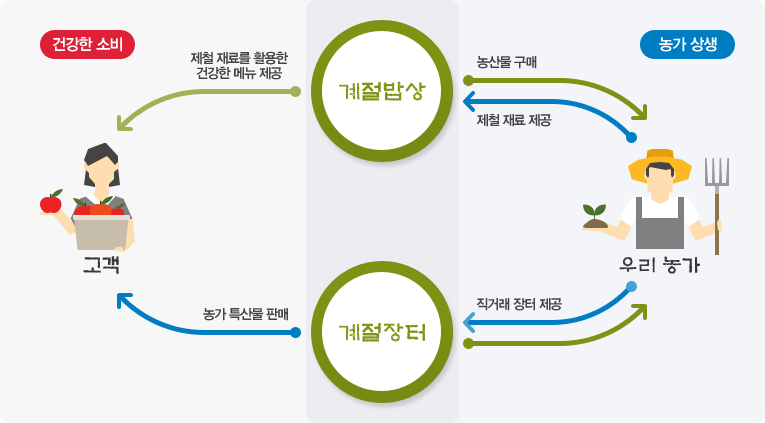
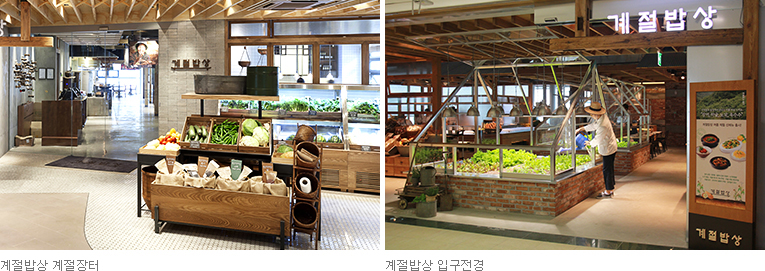
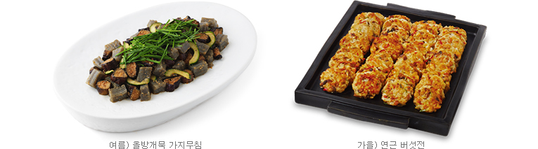

HOME > 지속가능 > 상생 · 나눔경영
상생 · 나눔경영
CJ푸드빌은 글로벌 외식문화 기업으로서의 사회적 책임을 다하고자 노력하고 있습니다
CJ푸드빌은 임직원들의 자발적이고 진정성 있는 봉사활동 참여를 통해 지역사회에 기여하고 글로벌 외식문화 기업으로서의 사회적 책임을 다하고자 노력하고 있습니다.
- 착한빵 나눔 DAY
- CJ푸드빌은 매월 두번째 금요일을 '착한빵 나눔 DAY'로 지정하고 임직원들이 아동시설을 직접 방문하여 단팥빵을 전달할 뿐만 아니라 아동시설에서 필요로 하는 노력 봉사 등을 통해 나눔을 실천하고 있습니다.
- 행복 나눔 DAY
- CJ푸드빌만의 핵심역량을 활용하여 임직원들이 가장 잘 할 수 있는 활동을 통해 행복을 나누고자 합니다.
- 다양한 봉사활동
- 이 외에도 진천공장 급식봉사, 김장봉사, 헌혈 등의 진정성 있는 활동을 꾸준히 진행하고 있습니다.
계절밥상의 농가동행
계절밥상은 2013년 7월 개장 이래 국내 농가의 산지 제철 식재를 적극 활용하여 농가 상생의 계기를 마련하고 소비자에게는 우리 땅에서 나는 제철 식재를 활용한 건강한 먹거리를 제공해 오고 있습니다.
계절밥상 매장에는 농가의 특산물을 직접 판매할 수 있도록 ‘계절장터’를 마련하여 상시 운영하고 있으며, 농가와 소비자를 직접 연결하는 판로 및 홍보 채널로 활용하는 등 건강한 소비와 농가 상생을 실천하고 있습니다. 또한, 사라져가는 우리 토종 농산물인 동아, 하얀 민들레, 앉은뱅이밀 등을 발굴하여 메뉴를 개발함으로써 우리 전통 먹거리를 재조명하고 그 우수성을 알리고 있습니다.
-
- 제철 재료 발굴 및 메뉴 개발
- 계절밥상은 우리 땅에서 자란 건강한 농산물을 활용해 자연의 시간표대로 계절의 맛을 담아내기 위한 노력을 지속하고 있습니다. 민들레, 봄동, 하귤, 마, 오디 등 그 동안 선보인 국내산 제철 재료는 50여 종으로, 이를 활용한 총 120여 종의 제철 메뉴가 출시되었습니다. 향후에도 계절마다 우리 땅에서 우리 농민이 재배한 재료를 적극 활용해 더욱 다양하고 건강한 메뉴를 선보일 예정입니다. 
-
- 사라져가는 우리 토종 농산물 발굴 및 판로 지원
- 계절밥상은 동아, 하얀민들레, 앉은뱅이밀 등 사라져가는 우리 토종 농산물을 발굴하여 동아 겉절이, 하얀민들레 국수무침, 앉은뱅이밀 밥 등 적극적으로 메뉴를 개발하고 있습니다. 또한 우리 농가와의 계약재배를 통해 안정적인 수익 기반을 마련할 뿐만 아니라, 우리 전통 먹거리를 재조명하고 그 우수성을 알리고자 노력하고 있습니다. 특히 2015년 8월에 열린 '창농귀농박람회'에서는 동아와 하얀민들레, 앉은뱅이밀 등 사라져가는 우리 토종 농산물과 재배 농가를 일반인들에게 소개하였으며, 원물로 전시된 동아는 관람객들에게 큰 관심을 받았습니다.
-
- 농산물 직거래 지원
- 계절밥상 매장 입구에는 농민이 직접 키운 농가 특산물을 판매할 수 있도록 '계절장터'를 상시 운영하고 있습니다. 소비자와 직접 소통할 수 있는 공간이 부족하고 농산물에 대한 홍보역량이 부족한 농가의 특산물을 '계절장터'에서 직접 홍보하고 판매할 수 있는 기회를 제공함에 따라 농가에서는 소비자를 직접 만날 수 있는 판로를 확보하는 등 실질적인 농가 수입 확대 계기를 마련하였습니다. 또한 매주 주말마다 농민들이 직접 계절장터에서 자신의 농산물과 신선 가공품들을 선보이는 '주말장터'를 운영하고 있으며, CJmall 및 CJONmart 내 온라인 '계절장터' 운영을 통해 농산물 판매 채널을 확대하고 있습니다.
-
- 글로벌 사회공헌 프로그램
- CJ푸드빌은 CJ그룹의 창업 이념인 사업보국 정신을 국외까지 넓혀 베트남과 인도네시아, 중국에 CJ제과제빵학과를 운영 중입니다. 글로벌 사회공헌 프로그램을 통해 글로벌 외식문화 기업으로서의 책임을 다하도록 하겠습니다.
-
- 베트남 CJ제과제빵과
- CJ푸드빌은 2013년 한국국제협력단과 손잡고 글로벌 사회공헌 프로그램을 운영하여 베트남 현지 상생 활동의 일환으로 한-베 CJ 제과제빵학과를 개원하였으며, 교육장 설립부터 현지 강사 양성과 학생육성 및 교육시설 인프라를 지원하였습니다. 한-베 CJ제과제빵학과는 뚜레쥬르의 이론과 실습교육 내용을 현지화 하여 반영했으며, CJ푸드빌은 8개월간 현지에 전문강사를 파견해 교육 운영과 시설 형태를 점검한 후, 2013년 9월 베트남 응에안성 한베 기술학교를 오픈하였습니다.
-
- 인도네시아 CJ제과제빵과
- 2014년 9월 한국국제협력단(KOICA)과 함께 인도네시아 자카르타에 위치한 SMKN27 국공립학교 내 페이스트리(Pastry)학과의 시설과 교육과정 등을 개편해 CJ제과제빵학과를 개설, 뚜레쥬르의 전문성을 겸한 선진 제빵기술을 전수하며 인력 양성과 채용을 통해 학생들의 경제적 자립을 돕는데 주력하고 있습니다.
-
- 중국 CJ제과제빵과
- 지난 2005년 중국과 첫 연을 맺은 CJ푸드빌이 글로벌 사회공헌 프로그램으로 중국 베이징에 위치한 길리대학 내에 뚜레쥬르의 베이커리 전문기술력을 이전하는 CJ제과제빵학과를 오픈 했습니다. 길리대학 측의 지원을 받아 교내에 연면적 198㎡ 규모로 개설된 CJ제과제빵학과는 총 50명 정원의 2개 단과반으로 운영되며 제빵 이론·맞춤형 실습, 서비스·품질관리, 점포 운영 등 18주 과정의 커리큘럼으로 단계별 교육이 진행되고 있습니다.